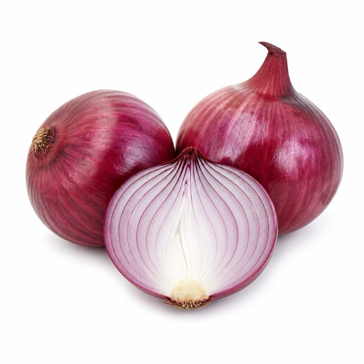
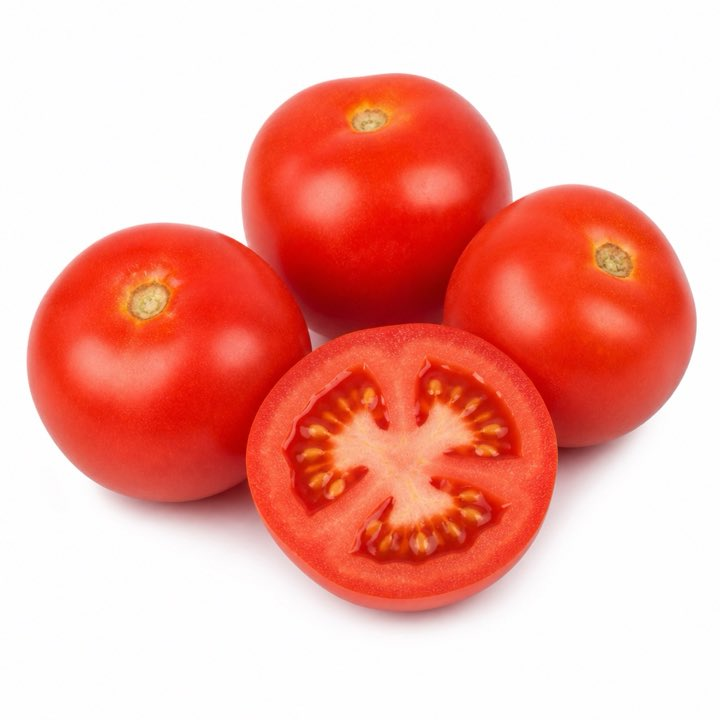
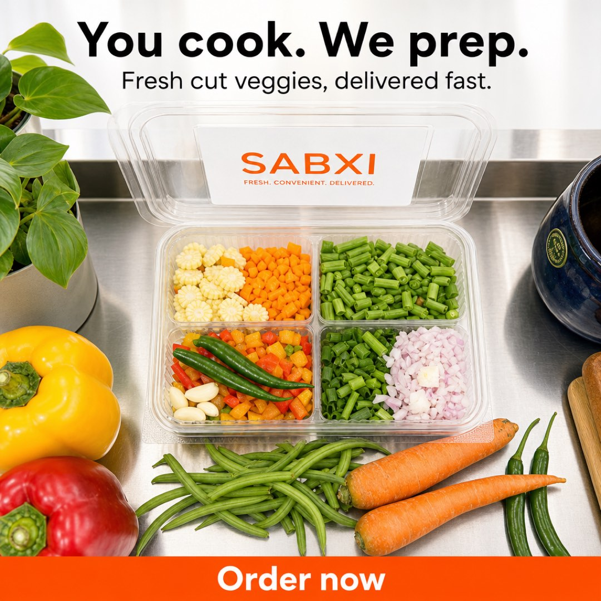
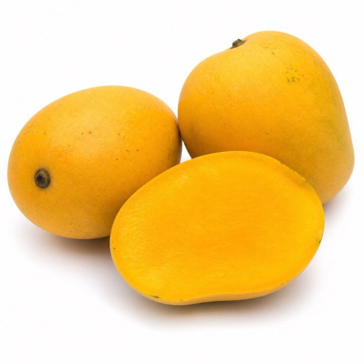

SABXI B2B · Mumbai
Mumbai best vegetables and fruits supplier
SABXI supplies cafes and restaurant kitchens in Mumbai with fresh vegetables and fruits. SABXI Studio in Chembur procures the produce, washes and sanitises it, cuts it to the kitchen’s specification, packs it in food-grade recyclable packaging, and delivers it in a next-day time slot.
Sabxi Private Limited · SABXI Studio, Chembur, Mumbai · Updated 16 November 2026 · मुंबई के कैफ़े के लिए सब्ज़ी और फल, आपके कट के हिसाब से।




Quick facts
- Supplier SABXI B2B
- Company Sabxi Private Limited
- City Mumbai
- Studio Chembur
- What Vegetables and fruits
- Cut Raw or to your spec
- Slot Next day
- FSSAI 21526015002628
- GSTIN 27ABUCS4728H1ZP
- Trial 98219 18192
The problem
A cafe morning goes to the market. Quality changes from batch to batch, and sorting, chopping, and waste sit on the kitchen margin.
01Hours lost sourcing every day
Someone has to leave the kitchen to buy the day’s produce.
02Quality changes batch to batch
The same item does not arrive the same way twice.
03Prep and waste eat the margin
Sorting and chopping use staff time before cooking starts.
What changes when SABXI supplies the kitchen
01Fewer prep staff to manage
The team starts from a cut, not from whole crates.
02No sorting wastage
The kitchen receives what the menu needs.
03Sanitised before packing
Ozonated wash, then a food-safe Suma tablet step.
04One place for the list
Everyday vegetables, cut prep, and seasonal fruit from one supplier.
Who we are
SABXI for homes
Fresh produce on the live shop and in the app.
Studio
Cut and prepped to order at SABXI Studio, Chembur.
SABXI for cafes
B2B supply of vegetables and fruits for Mumbai cafes.
Every vegetable on the cafe menu
A green tag means that item is also sold in that form. Cafe prices are quoted on the trial order. The live retail menu is separate.
- Amla
- Coriander (Dhaniya)
- Lettuce
- Red & Yellow Capsicum
- Arbi
- Cucumber (Kheera)
- Mild Chilli (Silba Big)
- Sambhar Onion (Small)
- Ash Gourd (Petha)
- Curry Leaves
- Mini Potato (Baby Aloo)
- Singhada (Water Chestnut)
- Baby Corn
- Drumstick (Sahjan)
- Mint
- Soya Leaves (Dill)
- Baingan Bharta Wala
- Drumstick Leaves (Moringa)
- Mirchi Bhajji
- Spinach (Palak)
- Beetroot
- Fenugreek (Methi)
- Mushroom
- Spring Onion
- Bhindi (Okra)
- French Beans
- Onion (Pyaz) cut
- Sweet Corn
- Bottle Gourd (Lauki)
- Gilki (Sponge Gourd)
- Papdi (Valor)
- Tomato (Tamatar)
- Broccoli
- Ginger
- Parwal (Pointed Gourd)
- Tundli (Tendli)
- Cabbage (Patta Gobhi)
- Green Chilli
- Peeled Garlic
- White Cucumber
- Capsicum
- Green Peas (Matar)
- Potato (Aloo) fries, chips
- White Onion (Safed Pyaz)
- Carrot (Gajar) grated
- Green Small Brinjal
- Pumpkin (Kaddu) cut
- Yam (Suran)
- Cauliflower (Phool Gobhi)
- Karela (Bitter Gourd)
- Radish (Mooli) grated
- Zucchini
- Cherry Tomatoes
- Knol Khol (Ganth Gobhi)
- Raw Banana (Kacha Kela) chips
- Cluster Beans (Gawar Phali)
- Lemon (Nimbu)
- Raw Garlic
Every fruit on the cafe menu
- Apple (Seb)
- Imported Avocado
- Papaya (Papita) cut
- Cape Gooseberry
- Imported Blueberry
- Pear (Nashpati)
- Chikoo (Sapota)
- Imported Green Grapes
- Pineapple (Ananas) cut
- Coconut cut
- Kiwi
- Pomegranate (Anar)
- Custard Apple (Sitaphal)
- Longan
- Raw Mango
- Dates
- Mango (Aam)
- Red Dragon Fruit
- Elaichi Banana
- Mosambi (Sweet Lime)
- Red Globe Grapes
- Export Quality Persimmon (Japani Phal)
- Mulberry
- Strawberry
- Green Apple
- Muskmelon (Kharbuja) cut
- Watermelon cut
- Guava (Amrud)
- Orange (Santra)
- White Dragon Fruit
How a cafe order works
You
- 1. Select the product
- 2. Choose raw or cuts
- 3. Select a next-day time slot
SABXI
- 1. We procure
- 2. Wash and sanitise
- 3. Pack in food-grade recyclable packaging
- 4. Deliver at your slot
Cut to spec. Weighed to the gram.
Example kitchen packs as they leave the studio.
0.500 kgBeans
5.050 kgGreen chillies
25.140 kgOnions
Washed. Sanitised. Packed.
Ozonator wash
Produce is washed in ozonated water.
Suma tablet sanitisation
A food-safe sanitising step before packing.
Food-grade packaging
Recyclable packs only.
Registered. Food-grade.
FSSAI
Registration number 21526015002628
GST
GSTIN 27ABUCS4728H1ZP. Legal entity Sabxi Private Limited, CIN U46301MH2026PTC473853.
Studio
SABXI Studio, Chembur, Mumbai. Google Maps.
Questions cafes ask
Who supplies vegetables and fruits to cafes in Mumbai?
SABXI B2B, part of Sabxi Private Limited, supplies cafes from SABXI Studio in Chembur. The order can be raw produce or produce cut to the kitchen’s specification.
Can the cut match our prep spec?
Yes. Choose raw, or a cut such as grated carrot, onion cut, potato fries and chips, or cut fruit. Packs are weighed to the gram. Examples: 0.500 kg beans, 5.050 kg green chillies, 25.140 kg onions.
How is the produce cleaned?
It is washed in ozonated water, then sanitised with a food-safe Suma tablet step, then packed in food-grade recyclable packaging.
What are the FSSAI and GST numbers?
FSSAI registration number 21526015002628. GSTIN 27ABUCS4728H1ZP.
Are cafe prices on this page?
No. Prices are shared when the trial order is confirmed. The shop on sabxi.com is the retail menu for homes.
How do we start?
Send the menu to Shubham, Manager. Call or WhatsApp 98219 18192, or email info@sabxi.com. The first delivery is cut to your spec.